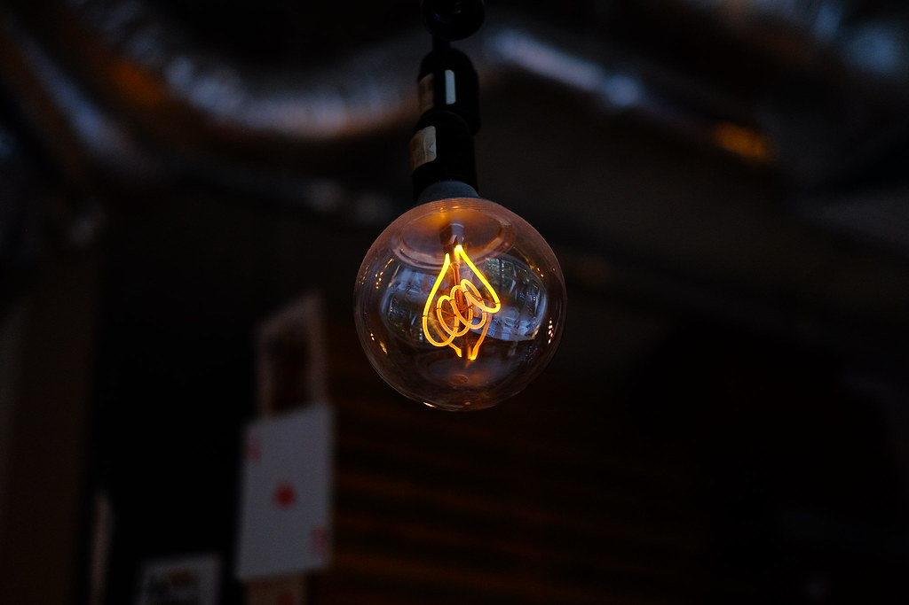
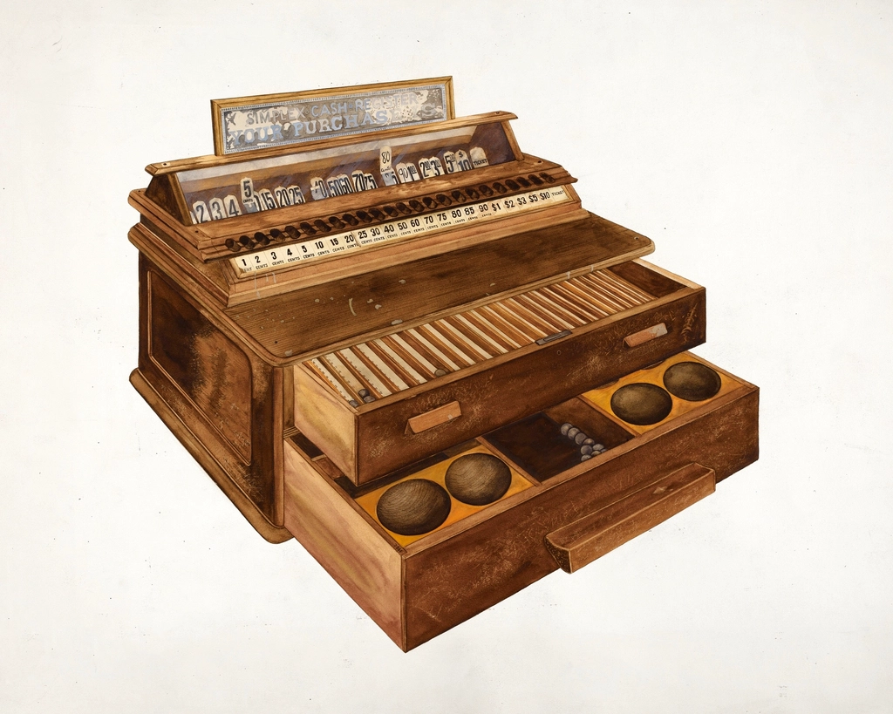

ABOUT
昭和町の時間が、
昭和町の時間が、
ゆっくり流れる場所

THE ATMOSPHERE
店内の雰囲気
ふかふかのソファに腰を沈めると、懐かしいBGMが静かに流れています。一歩店内に入れば、昭和の喫茶店の空気に包まれる ― それが、しゅーる CAFE SŪR の時間です。木のカウンターや照明にも、長く愛されてきたお店らしい温かみが漂います。
OUR STORY
こだわり・想い
しゅーる CAFE SŪR は、昔から変わらない味と雰囲気を、夫婦ふたりで守り続けているお店です。大きなオムライスやハンバーグ、昔ながらの大きなパフェ――ボリュームのある一皿一皿には、来てくれたお客様にしっかり満足して帰ってほしいという、ふたりの変わらない想いが込められています。栃木市昭和町という地名のとおり、ここにはゆっくりとした「昭和」の時間が今も流れています。
GALLERY
ふかふかのソファ（イメージ）
木製カウンター（イメージ）
懐かしい照明（イメージ）
レトロなレジ（イメージ画）
お店の雰囲気を少しだけご紹介
レトロな内装・ソファ・照明・パフェなどの写真を掲載しています（フリー素材使用）。

